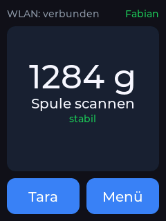
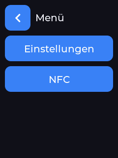
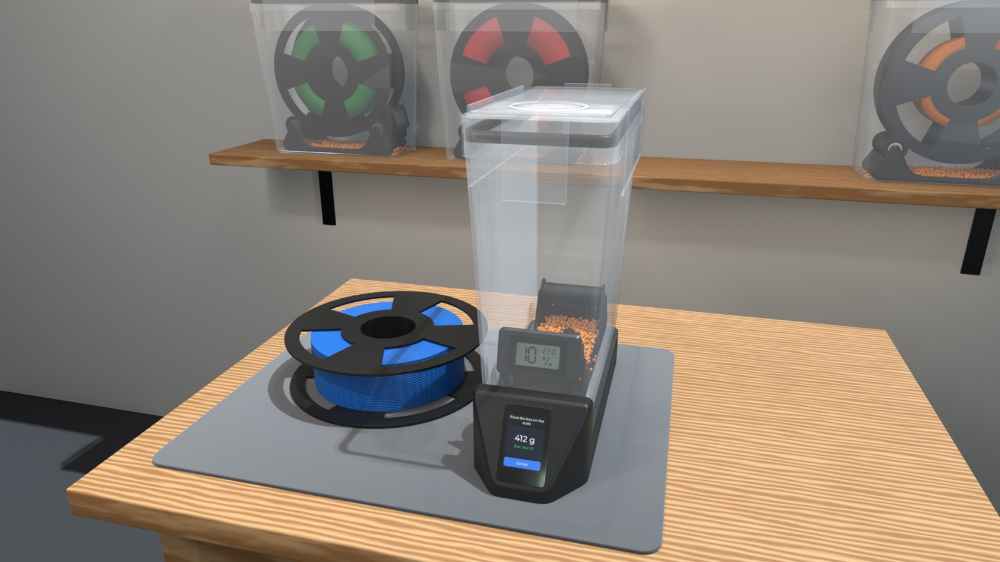

Spule scannen.
Wiegen. Fertig.Scan the spool.
Weigh. Done.
Eine smarte Filamentwaage mit NFC und Touch-Display. Sie erkennt Spule und Lagerbox, ermittelt das Restgewicht per Differenzwägung und trägt es automatisch in Spoolman ein. A smart filament scale with NFC and a touch display. It identifies the spool and the storage box, determines the remaining filament by differential weighing and writes it to Spoolman automatically.

So funktioniert esHow it works
Vier Schritte, ohne Tippen und ohne Zettel.Four steps, no typing, no notes.
Spule scannenScan the spool
Spule an die Scan-Zone halten. Der NFC-Tag (OpenSpool-Format) identifiziert sie, Spoolman liefert die Daten.Hold the spool to the scan zone. The NFC tag (OpenSpool format) identifies it, Spoolman supplies the data.
Box wiegenWeigh the box
Lagerbox mit Box-Tag auf die Waage stellen. Gewicht W1 wird gespeichert, der Box-Name wird zum Lagerort.Put the storage box with its tag on the scale. Weight W1 is stored, the box name becomes the location.
Spule einstellenInsert the spool
Spule in die Box stellen. Gewicht W2 wird erfasst. Was sonst noch in der Box liegt, ist egal.Place the spool in the box. Weight W2 is recorded. Anything else in the box does not matter.
SpeichernSave
Rest = (W2 − W1) − Leerspule. Bestätigen, und Spoolman kennt Restgewicht und Lagerort.Remaining = (W2 − W1) − empty spool. Confirm, and Spoolman knows weight and location.
Features
Alles läuft auf dem Gerät, ohne Cloud. Everything runs on the device, no cloud. Alle Funktionen im Detail →All features in detail →
NFC
PN532 liest und schreibt NTAG215/216. Spulen-, Box-, Benutzer- und Admin-Tags.PN532 reads and writes NTAG215/216. Spool, box, user and admin tags.
Spoolman
Gewicht, Lagerort und Besitzer per API. Offline-Warteschlange, wenn der Server fehlt.Weight, location and owner via API. Offline queue when the server is unreachable.
Stabile MessungStable readings
HX711 mit 10 Hz, Stabilitätsfenster, Tara, Kalibrierung und Drift-Nachführung.HX711 at 10 Hz, stability window, tare, calibration and drift tracking.
WeboberflächeWeb UI
Benutzer, Rollen, Filament-Katalog, Kalibrierung, Log. Zweisprachig.Users, roles, filament catalog, calibration, log. Bilingual.
Einfache EinrichtungEasy setup
WLAN-Hotspot mit Captive Portal wie bei Tasmota. Updates per OTA.Tasmota-style Wi-Fi hotspot with captive portal. OTA updates.
Rechte & SperreRoles & lock
Admin-PIN, Benutzer-PINs und Admin-Tag. Einstellungen sind geschützt.Admin PIN, user PINs and admin tag. Settings are protected.
Screens
Direkt aus dem echten UI-Code gerendert (240×320, LVGL 9).Rendered straight from the real UI code (240×320, LVGL 9).








Hardware
Überschaubar und günstig zu beschaffen. Small and cheap to source. Pinbelegung und Bauanleitung →Pinout and build guide →
| BoardBoard | Waveshare ESP32-S3-Touch-LCD-2 (16 MB Flash, 8 MB PSRAM, ST7789 240×320, CST816 Touch) |
|---|---|
| WägezelleLoad cell | Biegebalken 5 kg, 4 Leiter5 kg bar load cell, 4 wire |
| ADC | HX711, 3,3 V, 10 Hz |
| NFC | PN532 (SPI) |
| Tags | NTAG215 / NTAG216 |
| GehäuseEnclosure | 3D-gedruckt, Stahlballast im Sockel. PN532 mittig unter der Wiegeplatte, mindestens 3 cm frei von Metall.3D printed, steel ballast in the base. PN532 centered under the platform, at least 3 cm free of metal. |
LoslegenGet started
Mit PlatformIO bauen und flashen.Build and flash with PlatformIO.
git clone https://github.com/Drache055/filamentwaage.git
cd filamentwaage/firmware
cp include/secrets.h.example include/secrets.h
pio run -e waage -t upload # USB
pio run -e waage -t uploadfs
pio test -e native # Unit-Tests / unit testsOhne WLAN-Daten startet das Gerät den Hotspot „Filamentwaage-Setup“. Standard-Zugang: Admin-Passwort „Filament“, Geräte-PIN „1234“. Bitte sofort ändern.Without Wi-Fi credentials the device starts the “Filamentwaage-Setup” hotspot. Default access: admin password “Filament”, device PIN “1234”. Please change them right away.